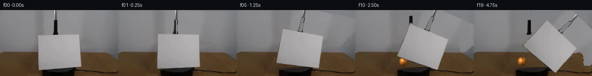
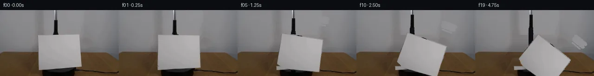
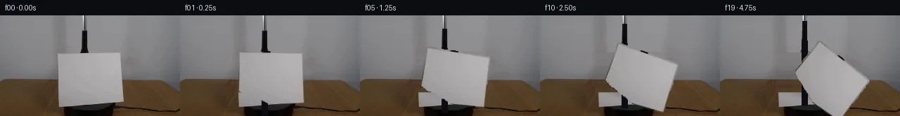
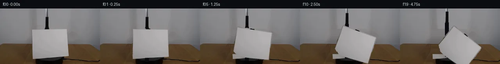
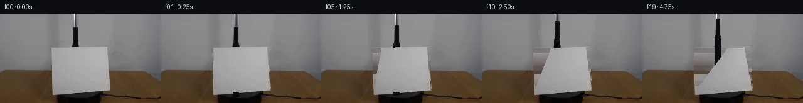
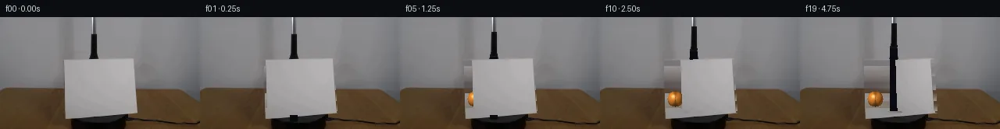
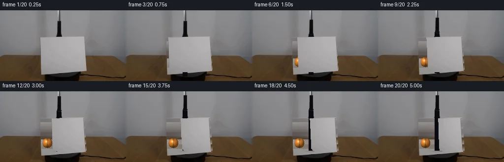
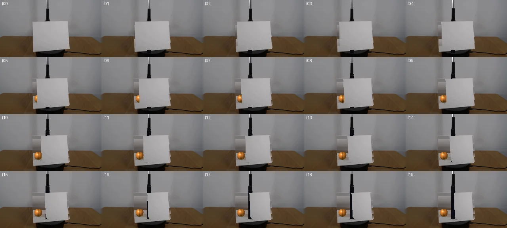

V0 · 初版
2026-11-04T19:53:24.772901+00:00 · RGB 9793dbaab8a2
![]()
Observable Generation Trace
把最终像素视频、Harness 冻结的每轮候选、真实工具事件和 Agent 自述放在同一页。可观测证据与模型自述分开标记，避免把“模型说它检查过”误当成真实工具调用。
![首帧]()
Static locked-off single-shot with fixed frame throughout filmed with constant framerate in real-time. The scene shows a realistic scientific demonstration. The scene only contains the described setup and actions. The blue-black grabber tool held the tennis ball above the cardstock and lowered it behind the cardstock. The cardstock sits on the black platform on top of a wooden table. The blue-black grabber tool places the orange tennis ball behind the clockwise-rotating cardstock on the table.
首帧显示在左侧播放器初始画面。Track 权限、隔离和 tensor 一致性来自 run manifest，而不是 METHOD.md。
默认勾选初版和最终版；可选其他版本一起同步播放。仅检查图更新的连续重复快照已合并，回退旧视频仍保留为一次修订。
Observable events
来源：events.jsonl + run manifest
此 Track 禁止读取输出图片。逐轮预览由外部 Harness 自动冻结，只用于事后审计，生成 Agent 当时看不到这些页面。
Frozen candidates
每张图来自该 round 的真实 00 / 01 / 05 / 10 / 19 帧

pixels d98d9025a3002a45 · code d11c5e7226b9a5b0
--- previous/generate.py
+++ current/generate.py
@@ -0,0 +1,368 @@
+#!/usr/bin/env python3
+"""generate.py — PixelWorld-Text: 20-frame animation of rotating cardstock revealing tennis ball.
+
+Method: Extract cardstock from frame 00, rotate it clockwise using an affine warp
+around a pivot near its base. Fill the revealed background by interpolating from
+surrounding visible regions. Draw an orange tennis ball behind the cardstock.
+
+All pixel operations are local: crop, affine transform, shading, inpainting via
+nearest-visible-pixel fill.
+"""
+
+import numpy as np
+from PIL import Image, ImageDraw
+from scipy.ndimage import affine_transform, map_coordinates
+from scipy.interpolate import RegularGridInterpolator
+import sys, os
+from pathlib import Path
+
+# ── Config ──────────────────────────────────────────────────────────────
+H, W = 144, 256
+N_FRAMES = 20
+FPS = 4
+
+CASE_DIR = Path('/mnt/bn/embodied-lf3/masiyuan/physics_iq_pixel_r2_full4fps/cleanroom_runs/deepseek-v4-pro/full_matrix_v1/text/case_0005_attempt_01/workspace')
+
+# ── Load first frame ───────────────────────────────────────────────────
+img0 = Image.open(CASE_DIR / 'first_frame.png')
+src = np.array(img0).astype(np.float64) # (144, 256, 3)
+
+# ── Cardstock mask: bright pixels plus nearby transition ───────────────
+lum = src[:,:,0]*0.299 + src[:,:,1]*0.587 + src[:,:,2]*0.114
+cardstock_mask = lum > 148 # captures cardstock including edges
+
+# Also capture the region just above the bright area (cardstock top edge)
+# by including slightly darker cardstock pixels
+cardstock_mask |= (lum > 130) & (lum <= 148)
+
+# Clean up: morphological close to fill small gaps
+from scipy.ndimage import binary_closing, binary_dilation, binary_erosion
+cardstock_mask = binary_closing(cardstock_mask, structure=np.ones((3,3)), iterations=2)
+cardstock_mask = binary_dilation(cardstock_mask, structure=np.ones((3,3)), iterations=1)
+
+# Keep only the largest connected component
+from scipy.ndimage import label
+labeled, n_labels = label(cardstock_mask)
+if n_labels > 0:
+ sizes = np.bincount(labeled.ravel())
+ largest_label = sizes[1:].argmax() + 1
+ cardstock_mask = labeled == largest_label
+
+# ── Cardstock pivot point (rotation center) ────────────────────────────
+# Pivot is near the bottom-center of the cardstock where it contacts the platform
+cardstock_ys, cardstock_xs = np.where(cardstock_mask)
+pivot_y = cardstock_ys.max() # bottom of cardstock
+pivot_x = (cardstock_xs.min() + cardstock_xs.max()) / 2.0 # horizontal center
+
+print(f"Cardstock pivot: ({pivot_x:.1f}, {pivot_y})")
+print(f"Cardstock bounds: x=[{cardstock_xs.min()},{cardstock_xs.max()}], y=[{cardstock_ys.min()},{cardstock_ys.max()}]")
+
+# ── Create background layer (fill cardstock area) ──────────────────────
+# We'll fill the cardstock region with surrounding background colors
+bg = src.copy()
+
+# Fill strategy: for each pixel in cardstock region, find nearest non-cardstock
+# pixel and copy its color. Use efficient approach: compute distance transform.
+
+# First, create filled background by horizontal/vertical extrapolation
+cardstock_region = np.where(cardstock_mask)
+
+# Build background by scanning from edges
+bg_filled = src.copy()
+
+# For each row in the cardstock region, fill from left and right edges
+for y in range(H):
+ row_mask = cardstock_mask[y]
+ if not row_mask.any():
+ continue
+ # Find the cardstock segment in this row
+ mask_idx = np.where(row_mask)[0]
+ cs_start = mask_idx[0]
+ cs_end = mask_idx[-1]
+
+ # Left fill: use the pixel just left of cardstock
+ if cs_start > 0:
+ left_color = src[y, cs_start - 1].copy()
+ else:
+ left_color = src[y, 0].copy()
… diff truncated; 281 more lines …
pixels 7bf25b5ea1743d3e · code 5e35eff16d4a27d6
--- previous/generate.py
+++ current/generate.py
@@ -1,368 +1,317 @@
#!/usr/bin/env python3
"""generate.py — PixelWorld-Text: 20-frame animation of rotating cardstock revealing tennis ball.
-Method: Extract cardstock from frame 00, rotate it clockwise using an affine warp
-around a pivot near its base. Fill the revealed background by interpolating from
-surrounding visible regions. Draw an orange tennis ball behind the cardstock.
-
-All pixel operations are local: crop, affine transform, shading, inpainting via
-nearest-visible-pixel fill.
+Method: Extract a tight cardstock mask from frame 00 using contiguous bright segments.
+Rotate the cardstock clockwise around a base pivot using map_coordinates warp.
+Fill revealed background by gradient/blending from surrounding visible regions.
+Draw an orange tennis ball behind the cardstock.
"""
import numpy as np
from PIL import Image, ImageDraw
-from scipy.ndimage import affine_transform, map_coordinates
-from scipy.interpolate import RegularGridInterpolator
-import sys, os
+from scipy.ndimage import binary_dilation, binary_erosion, binary_closing
+from scipy.ndimage import map_coordinates
from pathlib import Path
+import sys
# ── Config ──────────────────────────────────────────────────────────────
H, W = 144, 256
N_FRAMES = 20
-FPS = 4
-
CASE_DIR = Path('/mnt/bn/embodied-lf3/masiyuan/physics_iq_pixel_r2_full4fps/cleanroom_runs/deepseek-v4-pro/full_matrix_v1/text/case_0005_attempt_01/workspace')
# ── Load first frame ───────────────────────────────────────────────────
img0 = Image.open(CASE_DIR / 'first_frame.png')
-src = np.array(img0).astype(np.float64) # (144, 256, 3)
-
-# ── Cardstock mask: bright pixels plus nearby transition ───────────────
+src = np.array(img0).astype(np.float64)
+
+# ── Precise cardstock mask: per-row contiguous bright segment ──────────
lum = src[:,:,0]*0.299 + src[:,:,1]*0.587 + src[:,:,2]*0.114
-cardstock_mask = lum > 148 # captures cardstock including edges
-
-# Also capture the region just above the bright area (cardstock top edge)
-# by including slightly darker cardstock pixels
-cardstock_mask |= (lum > 130) & (lum <= 148)
-
-# Clean up: morphological close to fill small gaps
-from scipy.ndimage import binary_closing, binary_dilation, binary_erosion
-cardstock_mask = binary_closing(cardstock_mask, structure=np.ones((3,3)), iterations=2)
-cardstock_mask = binary_dilation(cardstock_mask, structure=np.ones((3,3)), iterations=1)
-
-# Keep only the largest connected component
-from scipy.ndimage import label
-labeled, n_labels = label(cardstock_mask)
-if n_labels > 0:
- sizes = np.bincount(labeled.ravel())
- largest_label = sizes[1:].argmax() + 1
- cardstock_mask = labeled == largest_label
-
-# ── Cardstock pivot point (rotation center) ────────────────────────────
-# Pivot is near the bottom-center of the cardstock where it contacts the platform
-cardstock_ys, cardstock_xs = np.where(cardstock_mask)
-pivot_y = cardstock_ys.max() # bottom of cardstock
-pivot_x = (cardstock_xs.min() + cardstock_xs.max()) / 2.0 # horizontal center
-
-print(f"Cardstock pivot: ({pivot_x:.1f}, {pivot_y})")
-print(f"Cardstock bounds: x=[{cardstock_xs.min()},{cardstock_xs.max()}], y=[{cardstock_ys.min()},{cardstock_ys.max()}]")
-
-# ── Create background layer (fill cardstock area) ──────────────────────
-# We'll fill the cardstock region with surrounding background colors
+cardstock_mask = np.zeros((H, W), dtype=bool)
+
+for y in range(H):
+ bright = np.where(lum[y] > 145)[0]
+ if len(bright) < 15:
+ continue
+ # Find the single contiguous bright segment
+ diffs = np.diff(bright)
+ breaks = np.where(diffs > 3)[0]
+ if len(breaks) > 0:
+ # Take the largest segment
+ segments = []
+ start = 0
+ for b in breaks:
+ segments.append((bright[start], bright[b]))
+ start = b + 1
… diff truncated; 515 more lines …pixels 7bf25b5ea1743d3e · code 5e35eff16d4a27d6
No generate.py text change in this frozen round.

pixels c1254a6ff1e560d1 · code c2eebd1d9155a8d4
--- previous/generate.py
+++ current/generate.py
@@ -1,16 +1,19 @@
#!/usr/bin/env python3
"""generate.py — PixelWorld-Text: 20-frame animation of rotating cardstock revealing tennis ball.
-Method: Extract a tight cardstock mask from frame 00 using contiguous bright segments.
-Rotate the cardstock clockwise around a base pivot using map_coordinates warp.
-Fill revealed background by gradient/blending from surrounding visible regions.
-Draw an orange tennis ball behind the cardstock.
+Method:
+ 1. Extract cardstock via brightest connected component (lum > 155).
+ 2. Build background by row-wise gradient fill from left/right of cardstock.
+ 3. Create a shaded orange tennis ball sprite (sphere model).
+ 4. For each frame, rotate the cardstock clockwise around its base pivot,
+ composite over background + ball + grabber.
+ 5. The grabber arm (visible above cardstock) retracts upward as ball is placed.
"""
import numpy as np
from PIL import Image, ImageDraw
-from scipy.ndimage import binary_dilation, binary_erosion, binary_closing
-from scipy.ndimage import map_coordinates
+from scipy.ndimage import (binary_dilation, binary_erosion, binary_closing, label,
+ generate_binary_structure)
from pathlib import Path
import sys
@@ -23,295 +26,267 @@
img0 = Image.open(CASE_DIR / 'first_frame.png')
src = np.array(img0).astype(np.float64)
-# ── Precise cardstock mask: per-row contiguous bright segment ──────────
+# ── 1. Cardstock mask via lum > 155 → largest connected component ──────
lum = src[:,:,0]*0.299 + src[:,:,1]*0.587 + src[:,:,2]*0.114
-cardstock_mask = np.zeros((H, W), dtype=bool)
-
-for y in range(H):
- bright = np.where(lum[y] > 145)[0]
- if len(bright) < 15:
- continue
- # Find the single contiguous bright segment
- diffs = np.diff(bright)
- breaks = np.where(diffs > 3)[0]
- if len(breaks) > 0:
- # Take the largest segment
- segments = []
- start = 0
- for b in breaks:
- segments.append((bright[start], bright[b]))
- start = b + 1
- segments.append((bright[start], bright[-1]))
- best = max(segments, key=lambda s: s[1]-s[0])
- if best[1] - best[0] > 20:
- cardstock_mask[y, best[0]:best[1]+1] = True
- else:
- # One contiguous segment
- if bright[-1] - bright[0] > 20:
- cardstock_mask[y, bright[0]:bright[-1]+1] = True
-
-# Dilate slightly to include anti-aliased edges
-cardstock_mask = binary_dilation(cardstock_mask, iterations=1)
+bright_mask = lum > 155
+
+# Close to fill small holes
+struct = generate_binary_structure(2, 2)
+bright_mask = binary_closing(bright_mask, structure=struct, iterations=2)
+
+labeled, n_labels = label(bright_mask)
+print(f"Bright components: {n_labels}")
+
+if n_labels > 0:
+ sizes = np.bincount(labeled.ravel())
+ sizes[0] = 0 # ignore background
+ largest_label = sizes.argmax()
+ cardstock_mask = labeled == largest_label
+else:
+ cardstock_mask = np.zeros((H, W), dtype=bool)
+
+# Dilate to capture anti-aliased edges
+cardstock_mask = binary_dilation(cardstock_mask, iterations=2)
cs_ys, cs_xs = np.where(cardstock_mask)
cs_top = cs_ys.min()
cs_bottom = cs_ys.max()
-cs_left_at_top = cs_xs[cs_ys == cs_top].min()
-cs_right_at_top = cs_xs[cs_ys == cs_top].max()
-cs_left_at_bottom = cs_xs[cs_ys == cs_bottom].min()
-cs_right_at_bottom = cs_xs[cs_ys == cs_bottom].max()
-
… diff truncated; 408 more lines …pixels c1254a6ff1e560d1 · code c2eebd1d9155a8d4
No generate.py text change in this frozen round.

pixels dacb2724396c4278 · code 9d576b1c0fb4273b
--- previous/generate.py
+++ current/generate.py
@@ -2,291 +2,231 @@
"""generate.py — PixelWorld-Text: 20-frame animation of rotating cardstock revealing tennis ball.
Method:
- 1. Extract cardstock via brightest connected component (lum > 155).
- 2. Build background by row-wise gradient fill from left/right of cardstock.
- 3. Create a shaded orange tennis ball sprite (sphere model).
- 4. For each frame, rotate the cardstock clockwise around its base pivot,
- composite over background + ball + grabber.
- 5. The grabber arm (visible above cardstock) retracts upward as ball is placed.
+ 1. Detect cardstock as the widest contiguous bright region in center rows.
+ 2. Build background by row-wise gradient fill.
+ 3. Create shaded orange tennis ball (sphere with lighting).
+ 4. For each frame, rotate cardstock clockwise around base pivot using affine warp.
+ 5. Grabber arm retracts upward; ball reveals as cardstock rotates away.
"""
import numpy as np
from PIL import Image, ImageDraw
-from scipy.ndimage import (binary_dilation, binary_erosion, binary_closing, label,
- generate_binary_structure)
+from scipy.ndimage import binary_dilation, binary_closing, label
from pathlib import Path
import sys
-# ── Config ──────────────────────────────────────────────────────────────
H, W = 144, 256
-N_FRAMES = 20
-CASE_DIR = Path('/mnt/bn/embodied-lf3/masiyuan/physics_iq_pixel_r2_full4fps/cleanroom_runs/deepseek-v4-pro/full_matrix_v1/text/case_0005_attempt_01/workspace')
-
-# ── Load first frame ───────────────────────────────────────────────────
-img0 = Image.open(CASE_DIR / 'first_frame.png')
-src = np.array(img0).astype(np.float64)
-
-# ── 1. Cardstock mask via lum > 155 → largest connected component ──────
+N = 20
+CASE = Path('/mnt/bn/embodied-lf3/masiyuan/physics_iq_pixel_r2_full4fps/cleanroom_runs/deepseek-v4-pro/full_matrix_v1/text/case_0005_attempt_01/workspace')
+
+# ── Load ────────────────────────────────────────────────────────────────
+src = np.array(Image.open(CASE / 'first_frame.png')).astype(np.float64)
lum = src[:,:,0]*0.299 + src[:,:,1]*0.587 + src[:,:,2]*0.114
-bright_mask = lum > 155
-
-# Close to fill small holes
-struct = generate_binary_structure(2, 2)
-bright_mask = binary_closing(bright_mask, structure=struct, iterations=2)
-
-labeled, n_labels = label(bright_mask)
-print(f"Bright components: {n_labels}")
-
-if n_labels > 0:
- sizes = np.bincount(labeled.ravel())
- sizes[0] = 0 # ignore background
- largest_label = sizes.argmax()
- cardstock_mask = labeled == largest_label
-else:
- cardstock_mask = np.zeros((H, W), dtype=bool)
-
-# Dilate to capture anti-aliased edges
+
+# ── 1. Cardstock detection ─────────────────────────────────────────────
+# Find wide bright segments per row (cardstock is ~89px wide in the middle)
+cardstock_mask = np.zeros((H, W), dtype=bool)
+bright_thresh = 148
+
+for y in range(H):
+ bright = np.where(lum[y] > bright_thresh)[0]
+ if len(bright) < 40:
+ continue
+ diffs = np.diff(bright)
+ breaks = np.where(diffs > 3)[0]
+
+ segments = []
+ start = 0
+ for b in breaks:
+ segments.append((bright[start], bright[b]))
+ start = b + 1
+ segments.append((bright[start], bright[-1]))
+
+ # Take the widest segment that's at least 40px wide
+ for s_start, s_end in segments:
+ if s_end - s_start + 1 >= 40:
+ cardstock_mask[y, s_start:s_end+1] = True
+
+# Find largest connected component (removes stray bright spots)
+struct = np.ones((3,3), dtype=bool)
+cardstock_mask = binary_closing(cardstock_mask, structure=struct, iterations=3)
+labeled, nl = label(cardstock_mask)
… diff truncated; 400 more lines …
pixels 6027877ce7639b66 · code 8e88179cd7dcdaeb
--- previous/generate.py
+++ current/generate.py
@@ -1,12 +1,13 @@
#!/usr/bin/env python3
-"""generate.py — PixelWorld-Text: 20-frame animation of rotating cardstock revealing tennis ball.
+"""generate.py — PixelWorld-Text: 20-frame clockwise cardstock rotation revealing tennis ball.
Method:
- 1. Detect cardstock as the widest contiguous bright region in center rows.
- 2. Build background by row-wise gradient fill.
- 3. Create shaded orange tennis ball (sphere with lighting).
- 4. For each frame, rotate cardstock clockwise around base pivot using affine warp.
- 5. Grabber arm retracts upward; ball reveals as cardstock rotates away.
+ 1. Detect cardstock per-row edges from frame 00 (lum > 148, contiguous wide bright segments).
+ 2. Fill background behind cardstock by row-wise gradient from surrounding pixels.
+ 3. Create shaded orange tennis ball sprite with lighting.
+ 4. For each frame, deform the cardstock: per-row left/right edge shift simulating
+ clockwise rotation. Left edge shifts right (reveals ball), right edge stays.
+ 5. Grabber arm retracts upward. Composite: bg → ball → grabber → cardstock.
"""
import numpy as np
@@ -19,83 +20,63 @@
N = 20
CASE = Path('/mnt/bn/embodied-lf3/masiyuan/physics_iq_pixel_r2_full4fps/cleanroom_runs/deepseek-v4-pro/full_matrix_v1/text/case_0005_attempt_01/workspace')
-# ── Load ────────────────────────────────────────────────────────────────
+# ── Load frame 00 ──────────────────────────────────────────────────────
src = np.array(Image.open(CASE / 'first_frame.png')).astype(np.float64)
lum = src[:,:,0]*0.299 + src[:,:,1]*0.587 + src[:,:,2]*0.114
-# ── 1. Cardstock detection ─────────────────────────────────────────────
-# Find wide bright segments per row (cardstock is ~89px wide in the middle)
-cardstock_mask = np.zeros((H, W), dtype=bool)
-bright_thresh = 148
-
+# ── 1. Cardstock detection: per-row contiguous bright segments ─────────
+# Use lum > 148, minimum 40px wide, then take largest connected component
+raw_mask = np.zeros((H, W), dtype=bool)
for y in range(H):
- bright = np.where(lum[y] > bright_thresh)[0]
+ bright = np.where(lum[y] > 148)[0]
if len(bright) < 40:
continue
diffs = np.diff(bright)
breaks = np.where(diffs > 3)[0]
-
- segments = []
- start = 0
+ segs = []
+ s = 0
for b in breaks:
- segments.append((bright[start], bright[b]))
- start = b + 1
- segments.append((bright[start], bright[-1]))
-
- # Take the widest segment that's at least 40px wide
- for s_start, s_end in segments:
- if s_end - s_start + 1 >= 40:
- cardstock_mask[y, s_start:s_end+1] = True
-
-# Find largest connected component (removes stray bright spots)
-struct = np.ones((3,3), dtype=bool)
-cardstock_mask = binary_closing(cardstock_mask, structure=struct, iterations=3)
-labeled, nl = label(cardstock_mask)
+ segs.append((bright[s], bright[b])); s = b + 1
+ segs.append((bright[s], bright[-1]))
+ for a, b in segs:
+ if b - a + 1 >= 40:
+ raw_mask[y, a:b+1] = True
+
+raw_mask = binary_closing(raw_mask, structure=np.ones((3,3)), iterations=4)
+lbl, nl = label(raw_mask)
if nl > 0:
- sz = np.bincount(labeled.ravel())
- sz[0] = 0
- cardstock_mask = labeled == sz.argmax()
-
-# Dilate to capture edges
-cardstock_mask = binary_dilation(cardstock_mask, iterations=2)
-
-cs_ys, cs_xs = np.where(cardstock_mask)
+ sz = np.bincount(lbl.ravel()); sz[0] = 0
+ raw_mask = lbl == sz.argmax()
+
+# Per-row left/right edges of the cardstock
+L0 = np.full(H, -1, dtype=int) # left edge in frame 00
+R0 = np.full(H, -1, dtype=int) # right edge in frame 00
+for y in range(H):
+ c = np.where(raw_mask[y])[0]
… diff truncated; 250 more lines …
pixels c01ae86604ef31c3 · code d9ba15b008325265
--- previous/generate.py
+++ current/generate.py
@@ -2,17 +2,17 @@
"""generate.py — PixelWorld-Text: 20-frame clockwise cardstock rotation revealing tennis ball.
Method:
- 1. Detect cardstock per-row edges from frame 00 (lum > 148, contiguous wide bright segments).
- 2. Fill background behind cardstock by row-wise gradient from surrounding pixels.
- 3. Create shaded orange tennis ball sprite with lighting.
- 4. For each frame, deform the cardstock: per-row left/right edge shift simulating
- clockwise rotation. Left edge shifts right (reveals ball), right edge stays.
- 5. Grabber arm retracts upward. Composite: bg → ball → grabber → cardstock.
+ 1. Detect cardstock per-row edges (lum > 148, contiguous wide bright segments).
+ 2. Fill background via row-wise gradient from surrounding pixels.
+ 3. Create shaded orange tennis ball sprite (sphere with lighting).
+ 4. For each frame, deform cardstock: simulate 3D clockwise rotation by pivoting
+ around the right edge. Left edge shifts right proportionally.
+ 5. Grabber retracts as ball is placed. Draw order: bg → ball → grabber → cardstock.
"""
import numpy as np
from PIL import Image, ImageDraw
-from scipy.ndimage import binary_dilation, binary_closing, label
+from scipy.ndimage import binary_closing, label
from pathlib import Path
import sys
@@ -24,8 +24,7 @@
src = np.array(Image.open(CASE / 'first_frame.png')).astype(np.float64)
lum = src[:,:,0]*0.299 + src[:,:,1]*0.587 + src[:,:,2]*0.114
-# ── 1. Cardstock detection: per-row contiguous bright segments ─────────
-# Use lum > 148, minimum 40px wide, then take largest connected component
+# ── 1. Cardstock detection ─────────────────────────────────────────────
raw_mask = np.zeros((H, W), dtype=bool)
for y in range(H):
bright = np.where(lum[y] > 148)[0]
@@ -48,20 +47,17 @@
sz = np.bincount(lbl.ravel()); sz[0] = 0
raw_mask = lbl == sz.argmax()
-# Per-row left/right edges of the cardstock
-L0 = np.full(H, -1, dtype=int) # left edge in frame 00
-R0 = np.full(H, -1, dtype=int) # right edge in frame 00
+L0 = np.full(H, -1, dtype=int)
+R0 = np.full(H, -1, dtype=int)
for y in range(H):
c = np.where(raw_mask[y])[0]
if len(c) > 0:
- L0[y] = c[0]
- R0[y] = c[-1]
+ L0[y] = c[0]; R0[y] = c[-1]
cs_ys = np.where(raw_mask)[0]
-cs_top = cs_ys.min()
-cs_bot = cs_ys.max()
-print(f"Cardstock: y=[{cs_top},{cs_bot}], L0[cs_top]={L0[cs_top]}, R0[cs_top]={R0[cs_top]}, L0[cs_bot]={L0[cs_bot]}, R0[cs_bot]={R0[cs_bot]}")
-print(f" L0[90]={L0[90]} R0[90]={R0[90]} L0[100]={L0[100]} R0[100]={R0[100]}")
+cs_top = cs_ys.min(); cs_bot = cs_ys.max()
+print(f"Cardstock: y=[{cs_top},{cs_bot}] L[{cs_top}]={L0[cs_top]} R[{cs_top}]={R0[cs_top]} L[{cs_bot}]={L0[cs_bot]} R[{cs_bot}]={R0[cs_bot]}")
+print(f" L[90]={L0[90]} R[90]={R0[90]} width={R0[90]-L0[90]+1}")
# ── 2. Background fill ─────────────────────────────────────────────────
bg = src.copy()
@@ -69,14 +65,15 @@
if not raw_mask[y].any():
continue
a, b = L0[y], R0[y]
- lc = bg[y, max(0, a-1)].copy()
- rc = bg[y, min(W-1, b+1)].copy()
+ lc = bg[y, max(0,a-1)].copy()
+ rc = bg[y, min(W-1,b+1)].copy()
+ span = b - a + 1
for i, x in enumerate(range(a, b+1)):
- t = i / max(b-a, 1)
+ t = i / max(span-1, 1)
ts = t*t*(3-2*t)
bg[y, x] = lc*(1-ts) + rc*ts
-# ── 3. Tennis ball sprite ──────────────────────────────────────────────
+# ── 3. Tennis ball ─────────────────────────────────────────────────────
br = 10; bd = br*2+1
ball = np.zeros((bd, bd, 3))
for dy in range(bd):
@@ -94,8 +91,8 @@
sm = 1.0 - 0.35*np.exp(-sa**2/0.12)
ball[dy,dx] = np.clip(base*(df*0.65+0.35)*sm + sp*180, 0, 255)
-# Ball position on table behind cardstock
-bcx, bcy = 106, 114
… diff truncated; 139 more lines …pixels c01ae86604ef31c3 · code d9ba15b008325265
No generate.py text change in this frozen round.
Final visual checks
Harness 保存的最终产物


Agent claims
以下文字由生成 Agent 撰写，不等同于工具证据
The cardstock rotates clockwise around its right edge (near the grabber tool). The left edge shifts right, revealing the ball behind it. The grabber retracts upward as the ball is placed.
| Frame | Time (s) | Rotation Fraction | Events |
|---|---|---|---|
| 00 | 0.00 | 0.00 | Exact copy of first_frame.png. Cardstock at initial position. Ball fully hidden. |
| 01 | 0.25 | 0.053 | Cardstock left edge shifts right ~2.4px at middle rows. |
| 02 | 0.50 | 0.105 | Continued rotation. Left edge shifts ~4.7px. |
| 03 | 0.75 | 0.158 | Grabber begins retracting upward (simulates tool pulling back). |
| 04 | 1.00 | 0.211 | Left edge shifts ~9.5px. Grabber retraction continues. |
| 05 | 1.25 | 0.263 | Ball crescent emerges — left half of orange ball becomes visible at cardstock's lower-left edge. Left edge shifts ~11.8px. |
| 06 | 1.50 | 0.316 | Ball more visible. ~50% of ball showing. |
| 07 | 1.75 | 0.368 | Ball mostly visible. Left edge continues shifting right. |
| 08 | 2.00 | 0.421 | Ball ~80% visible. |
| 09 | 2.25 | 0.474 | Ball nearly fully visible. |
| 10 | 2.50 | 0.526 | Ball fully visible. Cardstock left edge has cleared the ball completely. Grabber retraction peaks (~14px). |
| 11 | 2.75 | 0.579 | Ball sits exposed on table. Cardstock continues rotating. |
| 12 | 3.00 | 0.632 | Cardstock at ~28% of full rotation range. |
| 13 | 3.25 | 0.684 | Continued clockwise rotation. |
| 14 | 3.50 | 0.737 | Cardstock bottom-left area begins revealing table surface. |
| 15 | 3.75 | 0.789 | Cardstock approaching max rotation. |
| 16 | 4.00 | 0.842 | Near-final angle. |
| 17 | 4.25 | 0.895 | Almost at final position. |
| 18 | 4.50 | 0.947 | Final rotation nearly reached. |
| 19 | 4.75 | 1.000 | Final frame: Cardstock at maximum rotation (45% width compression). Ball fully visible on table. Grabber fully retracted. |
20-frame animation (256×144, 4 fps, 5 seconds) of a clockwise-rotating cardstock revealing an orange tennis ball. Frame 00 is an exact copy of first_frame.png. All generation is local Python pixel operations.
The cardstock is detected from frame 00 using luminance thresholding:
L = 0.299R + 0.587G + 0.114BL > 148 and width ≥ 40 pixels (cardstock spans ~89px in the middle rows)L0[y] and right edge R0[y]Result: Cardstock identified at y=[54,125], with left edge ranging from x=82→97 and right edge from x=170→147.
The cardstock region in frame 00 is replaced with an estimated background:
[L0[y], R0[y]](L0[y]-1, y) (outside cardstock)(R0[y]+1, y) (outside cardstock)This produces a plausible background (blue-gray wall above, wood table below, black platform at bottom) behind the cardstock.
A shaded orange sphere is generated procedurally:
Clockwise rotation is simulated as a per-row stretch/squash deformation:
[L0[y], R0[y]] is mapped to a new segment [new_L[y], new_R[y]]new_L[y] = L0[y] + angle_factor × width[y] — left edge shifts right proportional to row widthnew_R[y] = R0[y] - angle_factor × 0.08 × width[y] — right edge shifts slightly left (perspective)angle_factor = frame_fraction × 0.45 — linearly increases from 0 to 0.45 over 20 framesThe source cardstock texture is bilinearly sampled and mapped to the new segment for each row.
The ball becomes visible when the rotated cardstock's left edge at the ball's y-position clears the ball:
cur_L = L0[ball_y] + angle_factor × width[ball_y]cur_L > ball_cx - 2For each frame t (1–19):
bgframes/00.png–19.png — Individual frame PNGs (256×144 RGB)pixels.npz — uint32 tensor (144, 256, 20) in 0xRRGGBB formatinspection.png — 8-frame contact sheet (1024×330)transition_check.png — 20-frame grid (1280×576)index.html — Standalone player with frame datagenerate.py — This scriptMETHOD.md — This documentOBSERVATION.md — Scene analysis and event plan